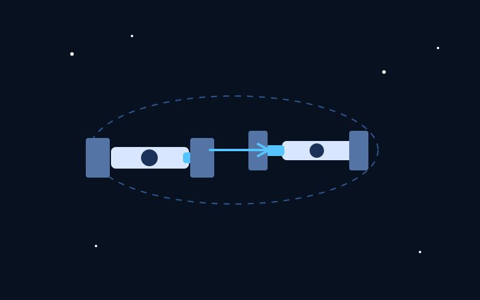

Короткий опис

Робота присвячена створенню програмного засобу для моделювання процесу зближення двох космічних апаратів, аналізу їхньої траєкторії відносного руху та визначення умов успішного стикування.
Ключові слова
космічні апарати, стикування, зближення, моделювання, орбітальна механіка, метод Рунге–Кутта, C++
Мета дослідження
Розробити програмний застосунок, який реалізує чисельне моделювання процесу зближення та стикування космічних апаратів і дозволяє визначати параметри відносного руху в часі.
Основні завдання
- Проаналізувати математичні моделі відносного руху космічних апаратів.
- Реалізувати систему рівнянь Клохессі–Вілтшира у програмному середовищі.
- Застосувати метод Рунге–Кутта 4-го порядку для чисельного інтегрування.
- Обчислювати координати, швидкості та відстань між апаратами у кожний момент часу.
- Перевіряти виконання умови стикування та формувати результати моделювання.
Методологія дослідження
В основі дослідження лежить математична модель відносного руху космічних апаратів, описана рівняннями Клохессі–Вілтшира. Для чисельного розв’язання системи диференціальних рівнянь використовується метод Рунге–Кутта 4-го порядку, що дозволяє отримати достатньо точні результати моделювання на кожному кроці часу.
Очікувані результати
- Отримання координат і швидкостей космічного апарата у процесі моделювання.
- Обчислення відстані між космічними апаратами як функції часу.
- Визначення моменту досягнення умови стикування або фіксація її недосягнення.
- Формування числових результатів для подальшого аналізу.
- Створення основи для подальшого розвитку програмного засобу.
Контактна інформація
Автор: Ткаченко Данііл
Заклад освіти: Сумський державний університет
Кафедра: Інформаційних технологій
Email: your@email.com
Репозиторій: github.com/OhChilled/Project